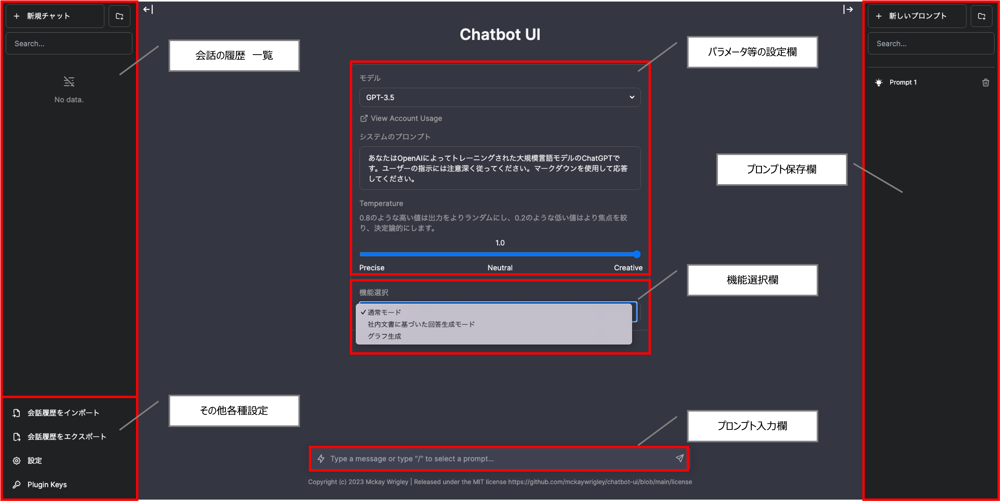
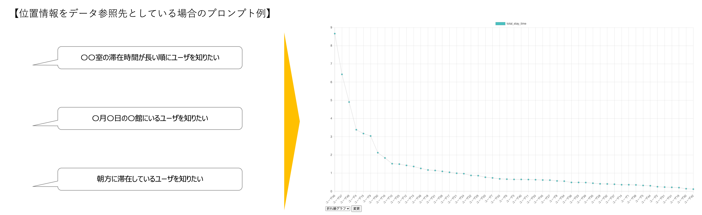
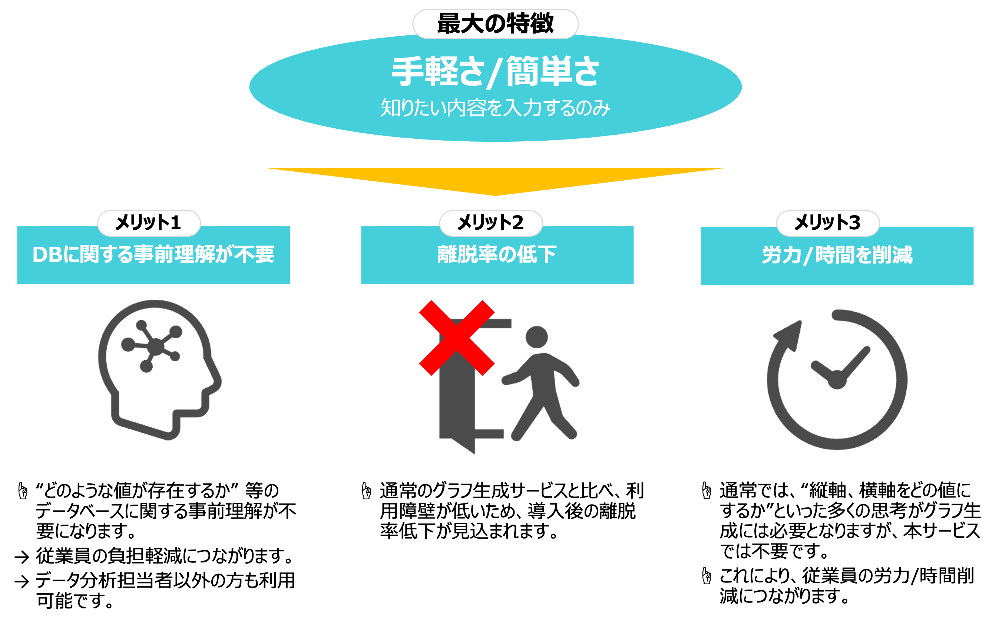
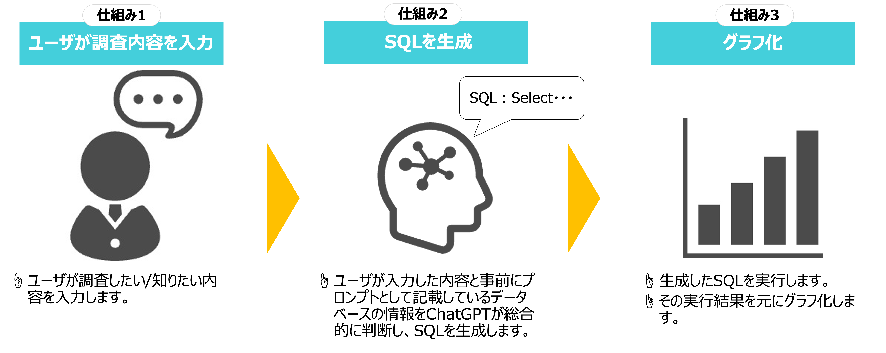

【 サービス概要 】
NexEmbark(ネクセンバーク)は、AIを活用した業務効率化ツールのプラットを目指し、開発いたしました。
”通常モード”、"社内文書検索"、”グラフ生成”の3つモードを用意しております。
UIについては、オープンソースであるChatbotUIを使用し、チャット形式で利用可能となっております。
通常モード(AI回答生成)
社内文書検索
グラフ生成
【 画面トップ 】
機能選択欄より、”通常モード”、"社内文書検索"、”グラフ生成”の3つモードが切り替え可能となっております。 会話の履歴、通常モードの回答精度を調整するパラメータ欄も用意しています。
【 通常モード 】
AIの回答生成モードになっており、汎用的な使い方ができるモードとなっています。 不明な点を聞く以外にも、議事録の添削やメール文の作成等、多くの場面で利用可能です。 チャット形式のユーザが使いやすいUIを採用しております。

【 社内文書検索 】
社内文書検索モードは、社内の多くの文献を事前にAzureのサービスに格納いただき、その文献を元にAIが回答を生成する機能になります。 下記は、デジタル庁の文献を格納し、回答を行った例になります。 使用した文献: https://www.digital.go.jp/news/yS0M_VaX 左記サイト内のデジタル・ガバメント推進標準ガイドラインよりダウンロード(2023/11/27)

【 グラフ生成 】
グラフ生成 概要
事前に参照先として設定しているデータから、ユーザのプロンプトに応じたグラフを生成します。 現在折れ線グラフ、棒グラフ、円グラフに対応しております。
特徴/メリット
NexEmbarkのグラフ生成最大の特徴は、ユーザはプロンプトを入力するのみという手軽さ、簡単さです。 DBの知識やデータサイエンスの知識は不要であり、グラフの縦軸や横軸の値を考える手間などもないため、ユーザの負担や時間を最小限に抑えることが可能です。
仕組みの概要
ユーザの入力内容に応じたSQLをChatGPTに生成させ、そのSQLの結果をグラフ化する仕組みになっています。
